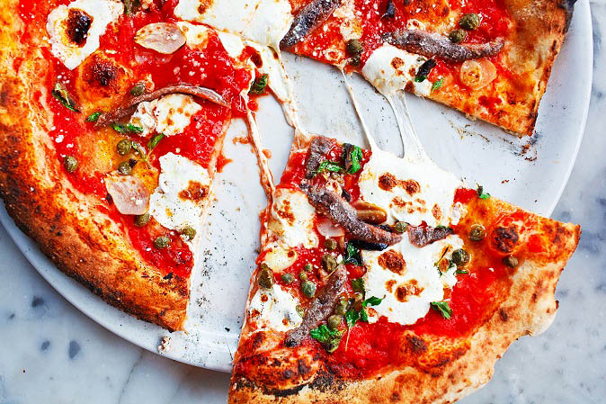

Pizza napoletană ( italiană : pizza napoletana ) cunoscută și sub numele de pizza în stil Napoli , este un stil de pizza realizat cu roșii și brânză mozzarella . Trebuie să fie făcută fie cu roșii San Marzano, fie cu Pomodorino del Piennolo del Vesuvio , care cresc pe câmpiile vulcanice din sudul Muntelui Vezuviu , și Mozzarella di Bufala Campana , o brânză cu denumire de origine protejată, făcută cu lapte din bivolițe de apă crescute în mlaștinile din Campania și Lazioîntr-o stare semi-sălbatică, sau „Fior di Latte di Agerola”, o mozzarella din lapte de vacă fabricată exclusiv în comuna Agerola .
Pizza napolitană este un produs tradițional de specialitate garantată (STG) în Europa, iar arta fabricării sale este inclusă pe lista patrimoniului cultural imaterial al UNESCO . [2] Acest stil de pizza a dat naștere pizza în stil New York, care a fost făcută pentru prima dată de imigranții italieni în Statele Unite la începutul secolului al XX-lea.